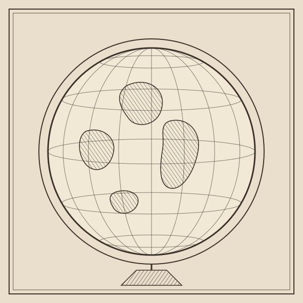

Yorozu Crossword
よろずのクロスワードパズル
Archive
これまでのクロスワードパズルを、テーマごとにまとめました。この端末で解いたものには「完成」、解きかけのものには「途中」の印がつきます。

2026年10月12日
世界の国と地域のクロスワードパズル第1回
大きな国から小さな島の地域まで、世界各地の名前が並びます。位置や文化を思い浮かべながら、旅する気分でマスを埋めてみてください。